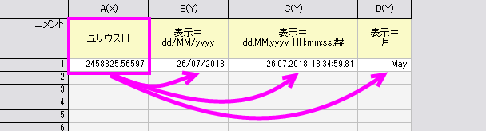
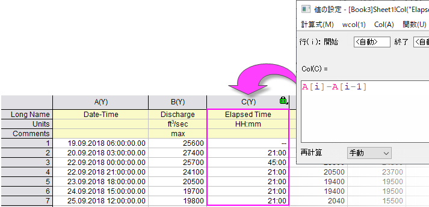

日時演算
Date-Time-Math-Operations
最近のバージョンのOriginでは、日時データのインポートが改良されました。Origin 2020bでは、Text/CSVコネクタの日時インポートが改善され、Origin 2021では、MSExcelからコピー/貼り付けする際の日時の処理が改善されました。
古いX-ファンクションベースのインポートに関しては、フィルタを使用してデータをインポートする場合や、ASCIIオプションでカスタム形式を指定する場合を除き、日時データはテキストとして扱われる可能性があります（ワークシートで日時データが左揃え（テキスト）か右揃え（数値）であるかどうかを調べることで、すばやく確認できます）。数値演算（たとえば経過時間の計算）で日時データを使用するには、それらが適切にフォーマットされていること、つまり数値データとして扱われていることを確認する必要があります。
また、日時データに対して数学演算を実行する必要がある場合、日時の数値と日時文字列を操作するために、Originには多くの日時、文字列、および数学関数が組み込まれています。
 | デフォルトでは、日時（設定画面のフォーマットでは日付と表記されていますが、時間要素も含みます）は内部的にはユリウス通日(倍精度)で保存されます。整数部分が日付で、小数部分が秒を示します。このシステムでは、小数点以下4桁までに制限されており、これより小さい値は四捨五入されます。Origin2019以降、「Time Zero」が2018年1月1日00:00と定義されている「2018」 日付システムをサポートしています。この場合は、整数部分が小さいので、少数部分の桁数を大きくすることができます。 2018システムでは、10-8秒まで対応しています。
|
日付、時間、月、曜日
Originの日時の値は、データ型double(8)の天文学ユリウス日番号として内部的に格納されます。これらの内部的に格納された値は、日時データ用に選択した表示オプションとは無関係であることに留意してください。これらのユリウス日の値は、日時データに対して数学演算を実行するときに使用されます。
- 
もう1つの注意点は、内部で保存された値が表示フォーマットの選択に影響されないため、サポートされている任意の日時表示オプション間で自由に前後に切り替えることができる点です（すなわち、小数点以下2桁にフォーマットされた日時値から元の日時値に切り替えても、元となる値を変更しないため、精度の損失はありません）。
Originは基本的な日付、時間、月、曜日のフォーマットをサポートしています。さらに、それぞれに対応したいくつかの表示オプションがあります（例：日付記法で使用される月表示オプションに加えて、月は "Jan", "January" または "J" と表示することができます）。
詳細は、こちらを確認してください：
- 列プロパティダイアログボックスフォーマットオプション
- 列プロパティダイアログボックスの表示 オプション
日時演算：日付と時間
列Aに日時の値が含まれ、列Bに列Aの各日時値で行われた測定値が含まれているワークシートがある場合に、各測定の間にどれくらいの時間が経過したかを知りたいことがあるかもしれません。3つ目の列Cを作成して、列値の設定ダイアログボックスを使用して、測定間の経過時間のデータセットを簡単に生成することができます。
A[i]-A[i-1] // i は2から列Aの最後の行
- 
 | Origin 2021bでは、時間形式の制限が240日から548日に増加しました（つまり、表示 = Hh：mmに設定された時間列に 13151：00 と入力すると 13151：00 と表示されますが、 13152：00 と入力すると 00:00 と表示されます）。548日以上の経過を伴う経過時間の計算を行う場合、列のフォーマットを時間から数値に変更すると、小数部分を含む時間を日単位で追跡できます。
|
日時演算：月
前述したように、数値および日時のテキスト文字列を操作するために使用できるいくつかのOrigin関数があります。LabTalkスクリプトガイドの中にこれらの関数のリストがあります。数値を月表現に変換する場合、Originはこれらの関数の1つである、mod (modulus)関数を使用します。
1月（1）から12月（12）まで月が列挙されます。12より大きい数値は、月に変換するとモジュラス関数（Modを参照）によって処理されます。モジュラス関数は、次の構文を使用します：
mod(x,y) = 整数xを整数yで割った余り
例：
mod(46,12)（＝46を12で割った余り）は10、10は10月（12月= 0）なので、46は10月に変換されます。
フォーマットが月に設定されている列のセルに1から12の範囲外の値を入力することはできません。この範囲外の値を入力した場合、Originは欠損値として表示します。ワークシートにそれらの値を入力するには、列のフォーマットを文字と数値に設定してから入力してください。その後、列のフォーマットを月に戻してください。
日時演算：曜日
曜日は日曜日（0）から土曜日（6）まで列挙されます。6より大きい数値は、曜日に変換されたときにモジュラス関数によって処理されます。
例：
mod(46,7)（＝46を7で割った余り）は4で、4は木曜日に割り当てられているため、46は木曜日に変換されます。
フォーマットが曜日に設定されている列のセルに0から6の範囲外の値を入力することはできません。この範囲外の値を入力した場合、Originは欠損値として表示します。ワークシートにそれらの値を入力するには、列のフォーマットを文字と数値に設定してから入力してください。その後、列のフォーマットを曜日に戻してください。